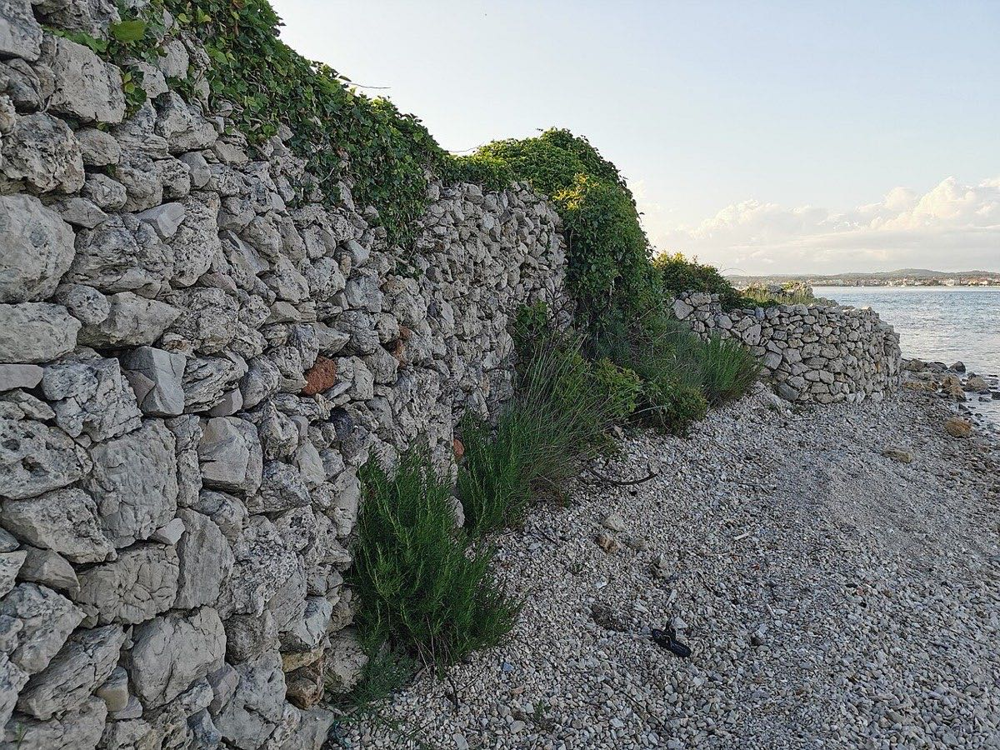
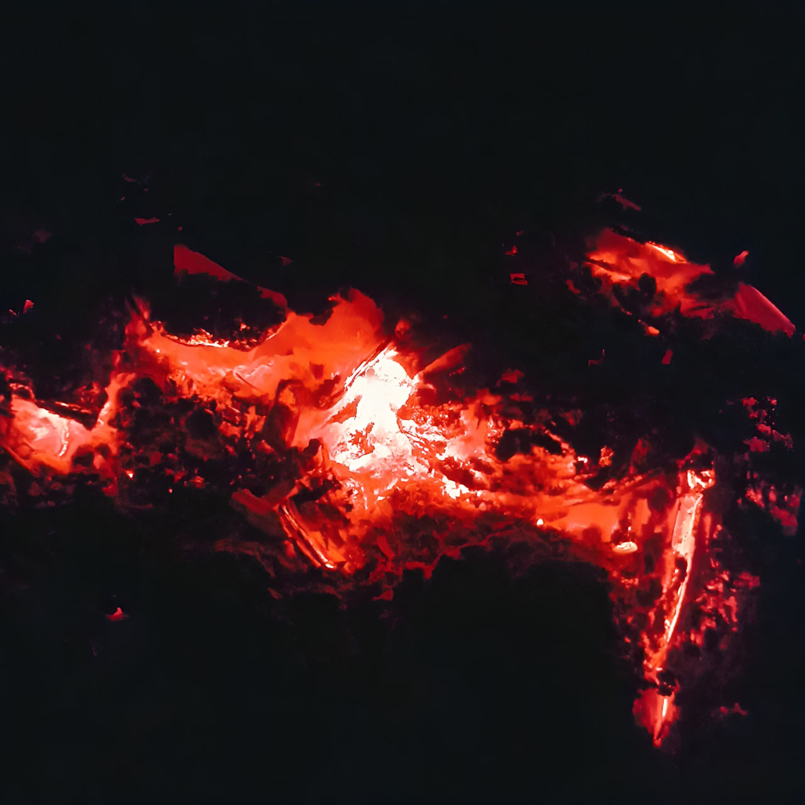
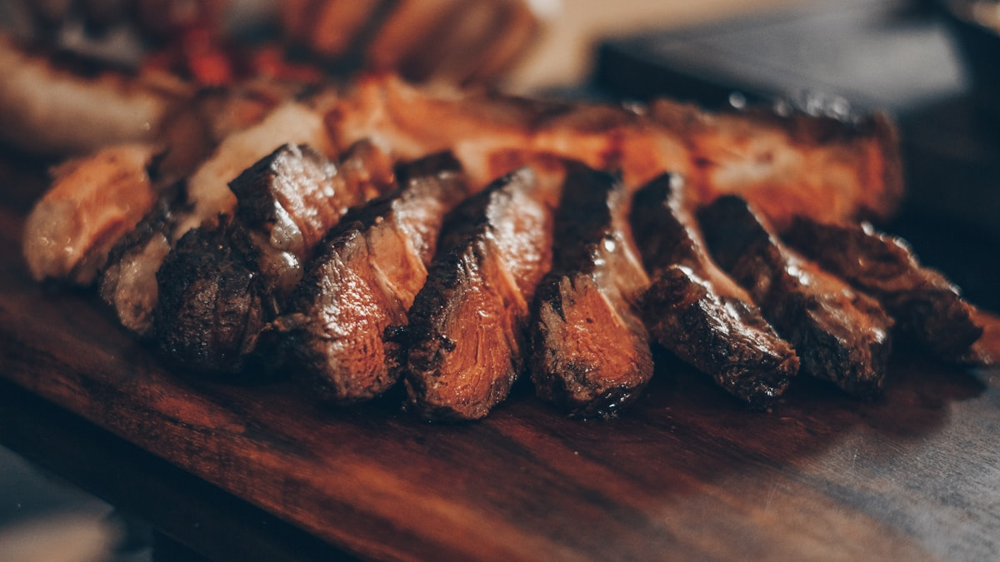
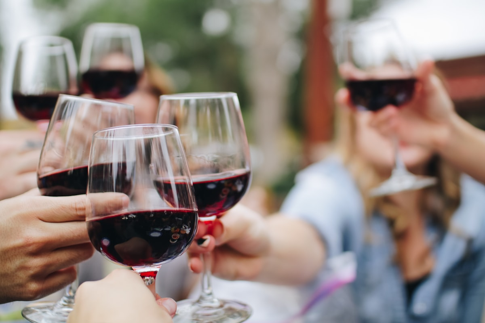

Konoba Gušte
Meso s gradela, žar od gloginje i smrike, ruke koje znaju kad je gotovo. Kuhinja kakvu je zaleđe oduvijek znalo, na stolu u Vodicama.

gȕšt, m.
(tal. gusto: okus, užitak)
»Ono radi čega se sjeda za stol i ne gleda na sat. Slast koja se ne objašnjava: pozna se po tišini za stolom.«
Mi smo konoba toga imena i toga zanata. Meso zrije polako, žar se slaže strpljivo, a gradele rade svoj posao bez žurbe. Sve ostalo: kruh, sol, vino i društvo.
Zanat iz zaleđa
Iza Vodica, čim cesta krene uzbrdo, počinje drugi svijet: krš, gromače i suhozidi što se penju preko brda bez ijedne vreće cementa. U tom kraju meso se nikad nije peklo na struju — pekli su ga žar, kamen i vrijeme.
Gušte je konoba toga zanata. Žar slažemo od tvrdog drva, gradele stoje visoko dok žeravica ne prestane pucketati, a meso se pušta da odmori prije nego što dođe na stol. To se ne uči s papira. Gleda se, godinama, preko nečijeg ramena.
Zato kod nas večera traje. Uz meso idu kruh, sol i vino, i razgovor koji se ne prekida. Gušt, u izvornom značenju riječi.
Dođite gladni. Ostalo je naš posao.

Žar, kamen i stol




Nađemo se za stolom.
Adresa
Vodice, Šibensko-kninska županija, Hrvatska
Radno vrijeme
Kuhinja radi do pola sata prije zatvaranja. Izvan sezone preporučujemo najavu.
Rezervacije
Telefon: +385 98 336 023
Email: konoba@email.t-com.hr
Janjetinu s ražnja i veće stolove najavite dan ranije.
Konoba Gušte · Vodice
Klikom se učitava Google Maps karta.